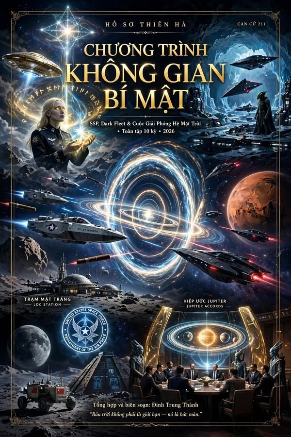
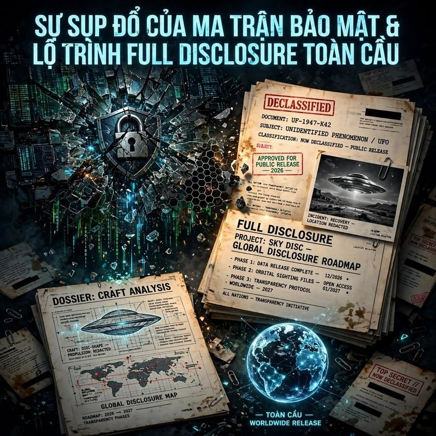
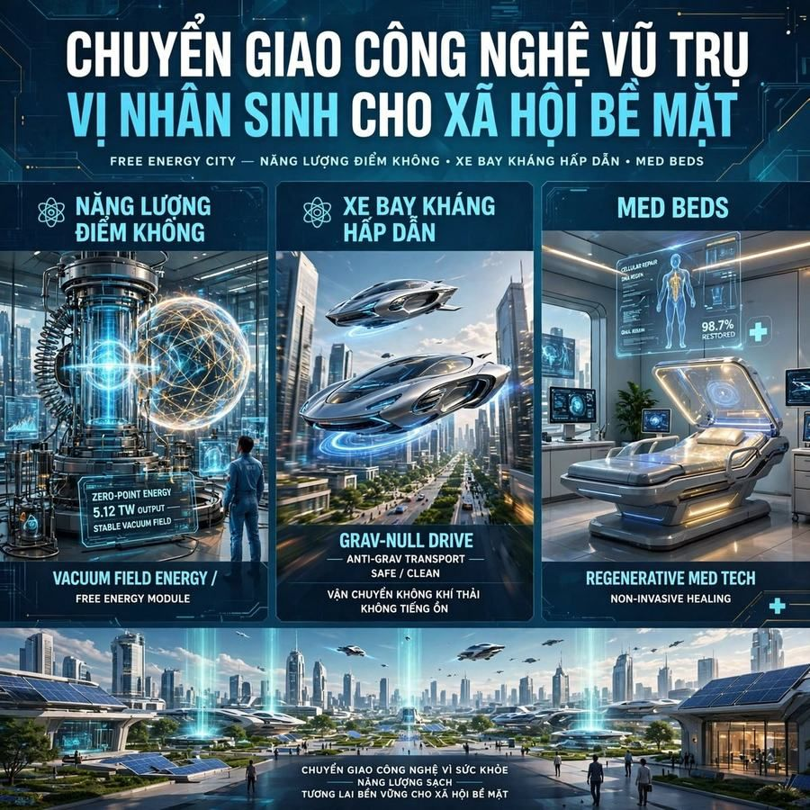
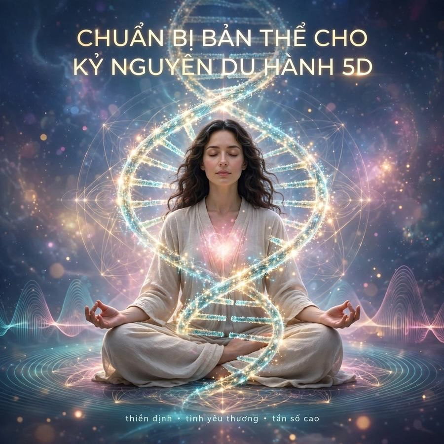
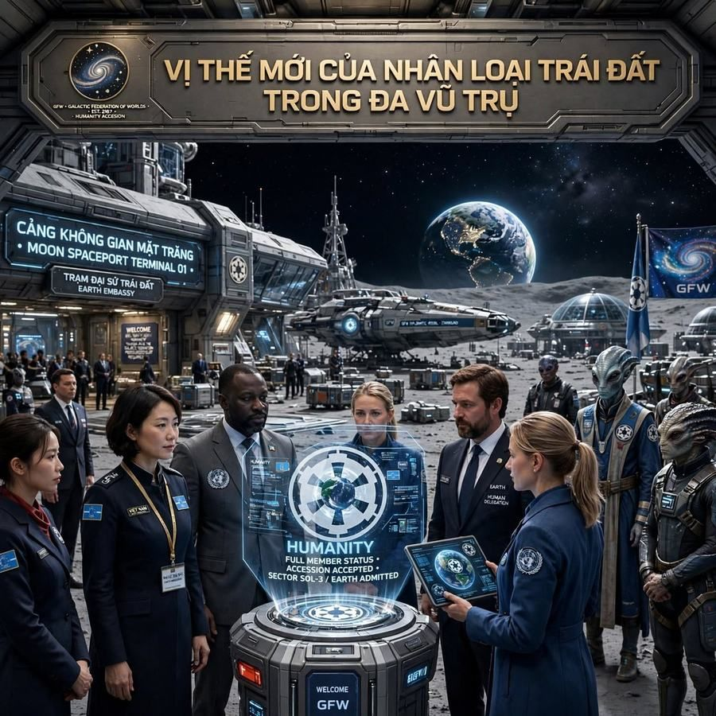
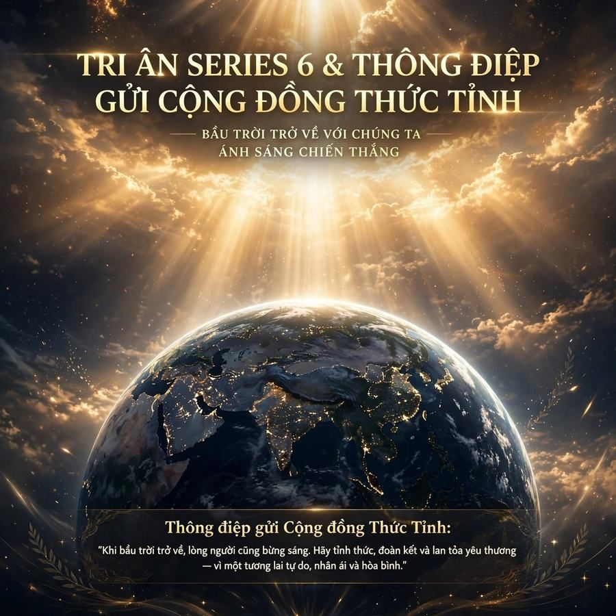

Trang chủ / Chuyên đề 5: Chương Trình Không Gian Bí Mật / Kỳ 50
Chuyên đề 5 · Kỳ 50 / 90
KỶ NGUYÊN DU HÀNH VŨ TRỤ CÔNG KHAI & TƯƠNG LAI LOÀI NGƯỜI TRÁI ĐẤT TRONG ĐA VŨ TRỤ

Hành trình 10 kỳ của chuyên đề 5: Bí Ẩn Các Chương Trình Không Gian Bí Mật (SSP) & Hạm Đội Đen (Dark Fleet) đã chính thức bước vào thời khắc khép lại vô cùng tráng lệ! Qua 9 kỳ vừa qua, chúng ta đã cùng nhau bóc tách từng lớp ma trận bóng tối ngoài không gian: Khám phá nguồn gốc thập niên 1930 của đĩa bay Vril và Căn cứ 211 Nam Cực, vạch trần Hạm Đội Đen (Dark Fleet), tìm hiểu Hạm đội Solar Warden gác cổng Hệ Mặt Trời, phơi bày bộ mặt công nghiệp nô dịch của ICC trên Sao Hỏa, giải mã Trạm LOC và vùng tối Mặt Trăng, kinh ngạc trước công nghệ thời gian Looking Glass, theo dõi sự trỗi dậy của SSP Trung Quốc, chứng kiến sự ra đời công khai của Lực lượng Không gian Mỹ (USSF), vỡ òa trước trận chiến giải phóng Nam Cực, và chiêm ngưỡng khúc khải hoàn khi Liên Đoàn Thế Giới Thiên Hà (GFW) cùng Thỏa Thuận Sao Mộc (Jupiter Accords 2021) đòi lại sự tự do vĩnh viễn cho Hệ Mặt Trời. Và giờ đây, khi các căn cứ bóng tối đã bị quét sạch và lá chắn tần số thăng hoa được kích hoạt, câu hỏi lớn nhất mở ra cho tương lai chính là: Nhân loại Trái Đất sẽ bước vào Kỷ nguyên du hành vũ trụ công khai như thế nào? Sự sụp đổ của Ma trận Bảo mật (Security Secrecy) sẽ đưa tri thức không gian đến với cộng đồng ra sao? Sự chuyển giao các công nghệ Năng lượng Tự do, động cơ kháng hấp dẫn và Giường Y Tế Lượng Tử (Med Beds) sẽ tái thiết đời sống con người thế nào? Vị thế đại sứ của nhân loại Trái Đất trong Cộng đồng Liên Thiên Hà được khẳng định ra sao? Và làm thế nào để mỗi cá nhân chuẩn bị tâm thức bước vào Kỷ nguyên Du hành Liên sao 5D?
1. SỰ SỤP ĐỔ CỦA MA TRẬN BẢO MẬT & LỘ TRÌNH FULL DISCLOSURE TOÀN CẦU
Trong hơn 70 năm, sự thật về sự tồn tại của văn minh ngoài hành tinh và các chương trình không gian bí mật bị giấu kín sau bức tường "An ninh Quốc gia" . Nhưng rào chắn ấy đang sụp đổ từng ngày! A. Bạch Nhật Hóa Sự Thật Về UFO & Sự Sống Ngoài Trái Đất
- Không Thể Tiếp Tục Phủ Nhận: Sự xuất hiện liên tục của các vật thể bay không xác định (UAP/UFO) với quỹ đạo bay bẻ cong vật lý thông thường đã buộc các chính phủ và cơ quan không gian công khai phải từng bước thừa nhận sự tồn tại của các phương tiện siêu việt.
- Giải Mật Tài Liệu Từng Tầng: Các tài liệu lưu trữ về đĩa bay, các cuộc tiếp xúc thế kỷ 20 và các chương trình nghiên cứu đảo ngược công nghệ đang được giải mã, đưa nhân loại từ trạng thái bị lừa dối sang trạng thái tiếp nhận sự thật toàn diện. B. Chuyển Đổi Các Tập Đoàn Quốc Phòng Phục Vụ Dân Sinh
- Xóa Bỏ Mô Hình Nô Dịch Năng Lượng: Các tập đoàn công nghiệp vũ trụ trước đây phục vụ cho mục đích quân sự đen sẽ bị xóa bỏ quyền thao túng, chuyển hướng sang sản xuất các thiết bị phục vụ cho đời sống hòa bình, năng lượng sạch và y học cao cấp của toàn dân.

2. CHUYỂN GIAO CÔNG NGHỆ VŨ TRỤ VỊ NHÂN SINH CHO XÃ HỘI BỀ MẶT
Sự kết thúc của các chương trình SSP bóng tối sẽ trao trả lại cho nhân loại Trái Đất những thành tựu công nghệ bị đánh cắp suốt hàng thập kỷ. A. Năng Lượng Điểm Không & Giao Thông Kháng Hấp Dẫn
- Giải Phóng Khỏi Năng Lượng Hóa Thạch: Công nghệ thu hoạch Năng lượng Điểm Không (Free Energy) và lò phản ứng hạt nhân nhỏ gọn sẽ được đưa vào sử dụng rộng rãi, giúp triệt tiêu hoàn toàn ô nhiễm môi trường, giảm chi phí sinh hoạt về 0 và mang lại sự thịnh vượng cho mọi gia đình.
- Giao Thông Vượt Vận Tốc Âm Thanh: Ô tô và máy bay đốt nhiên liệu hóa thạch sẽ dần được thay thế bằng các phương tiện bay đệm từ kháng hấp dẫn, cho phép di chuyển đến bất kỳ đâu trên Trái Đất chỉ trong vài phút. B. Giường Y Tế Lượng Tử (Med Beds) & Y Học Tái Tạo
- Xóa Xổ Mọi Bệnh Tật Nan Y: Các công nghệ y học lượng tử Med Beds từ các chương trình SSP sẽ được phổ cập công khai. Các căn bệnh ung thư, tiểu đường, tổn thương thần kinh hay dị tật di truyền sẽ được phục hồi hoàn toàn ở cấp độ nguyên tử, mang lại sức khỏe trọn vẹn và kéo dài tuổi thọ tự nhiên cho con người.

3. VỊ THẾ MỚI CỦA NHÂN LOẠI TRÁI ĐẤT TRONG ĐA VŨ TRỤ
Con người Trái Đất không còn là những sinh mệnh bị giam cầm trong "hành tinh cách ly" , mà chính thức bước lên ngài vị đại diện cho một dân tộc tự do. A. Gia Nhập Liên Đoàn Thế Giới Thiên Hà (GFW)
- Thành Viên Bình Đẳng Của Cộng Đồng Vũ Trụ: Trái Đất sẽ cử các Đại sứ đại diện đại chúng (thuộc Liên minh Trái Đất) tham dự vào các Hội đồng Thiên Hà, đóng góp tiếng nói vào việc duy trì hòa bình và an ninh cho dải Ngân Hà.
- Mở Cửa Các Cảng Hàng Không Vũ Trụ Thương Mại: Mặt Trăng (Trạm LOC đã giải phóng) và các trạm quỹ đạo sẽ trở thành những cảng hàng không vũ trụ công khai, nơi con người Trái Đất có thể tham gia các chuyến du lịch, học tập và giao thương hòa bình với các văn minh thiên hà friendly. B. Bộ Gen Paa-Taal 22 Chủng Tộc Thức Tỉnh
- Đại Sứ Hòa Bình Của Đa Vũ Trụ: Với di sản di truyền chứa mã gen của 22 chủng tộc thiên hà được kích hoạt trọn vẹn, con người Trái Đất sở hữu khả năng thấu cảm, lòng từ bi và sự sáng tạo vượt trội — trở thành chiếc cầu nối hòa giải cho nhiều xung đột cổ đại trong vũ trụ!

4. CHUẨN BỊ BẢN THỂ CHO KỶ NGUYÊN DU HÀNH 5D
Để thực sự trở thành một "Cư Dân Vũ Trụ" (Cosmic Citizen), quá trình chuẩn bị quan trọng nhất không nằm ở máy móc hay phi thuyền, mà nằm ở Tần Số Nhận Thức của chính bạn:
- Rũ Bỏ Tâm Lý Nạn Nhân & Sợ Hãi: Ma trận kiểm soát bằng sự sợ hãi đã sụp đổ. Hãy tự tin khẳng định vị thế chủ quyền bản thể của bạn: Bạn là một sinh mệnh ánh sáng tự do, có quyền sống trong bình an, trí tuệ và sự dồi dào.
- Thực Hành Tình Yêu Thương & Sự Thấu Cảm: Vũ trụ rộng lớn vận hành theo Nguyên lý Tương hợp Tần số. Chỉ những trái tim biết yêu thương, tôn trọng sự sống và sống trong hòa hợp mới có thể kết nối được với các dải tần số cao cấp của dải Ngân Hà.
- Mở Rộng Tâm Trí Đón Nhận Tri Thức Mới: Hãy sẵn sàng buông bỏ những giáo điều cũ kỹ, chủ động tìm hiểu lịch sử thiên hà, luyện tập định tâm thiền định và giữ cho tâm trí luôn rộng mở trước những chân lý vĩ đại đang được hé lộ.

5. TRI ÂN SERIES 5 & THÔNG ĐIỆP GỬI CỘNG ĐỒNG THỨC TỈNH
chuyên đề 5: Bí Ẩn Các Chương Trình Không Gian Bí Mật (SSP) & Hạm Đội Đen (Dark Fleet) chính thức khép lại, để lại một ngọn đuốc trí tuệ sáng ngời:
- Bầu Trời Đã Trở Về Với Chúng Ta: Sự thật về cuộc chiến không gian đã chứng minh rằng: Dù bóng tối có dùng công nghệ tinh vi đến đâu, Ánh Sáng của Tình Yêu Thương và Chân Lý luôn là lực lượng chiến thắng cuối cùng!

Bình luận
Chia sẻ cảm nhận, câu hỏi hoặc tài liệu đối chiếu. Không cần đăng nhập.
Đang tải…